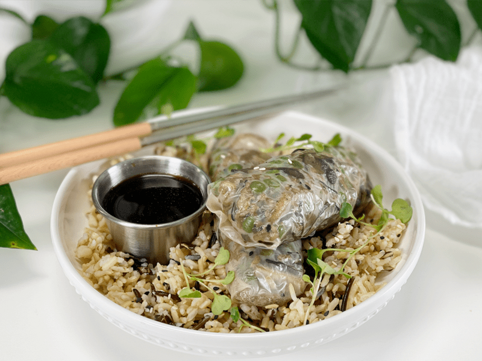

Asian Mushroom and Wild Rice Spring Roll | Plates of Inspiration
Lunchtime! Besides breakfast and dinner… lunchtime is my favorite meal. I just love to eat–is that so wrong?! These days, lunch equates to “yesterday’s” leftovers. But where’s the fun in serving them up just like I did yesterday? In this household, everything gets transformed. My brain is always eager to test out new creative ideas, especially when it comes to boring ol’ leftovers. Today, I got this hairbrained idea…what if I make spring rolls out of my leftover Asian Mushroom and Wild Rice Dish? The result? Success, and a fun one to boot.

To keep this dish gluten-free and vegan, I used rice paper to wrap the filling. I then popped them in the oven set at 350 degrees (F) and cooked them for 30 minutes. Not only did this reheat my rice dish, but it crisped up the rice paper wrap. I served it on a bed of wild rice, sprinkled my last 12 arugula microgreens on top (but who’s counting?). My dipping sauce was straight up coconut aminos (soy sauce substitute).
I encourage you to run to your fridge right now (I will wait). Now with your leftovers sitting in front of you, I want you to think outside the box and see what creative way you can transform the dish. Leave me a comment below! If you need help, just ask. We can put our heads together and see what tasty creation we can create in YOUR kitchen. Blessings and health, amie sue
© AmieSue.com